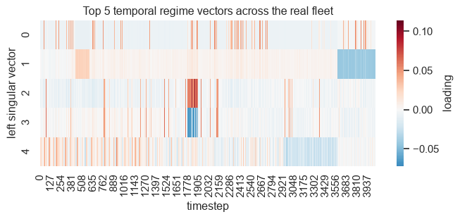
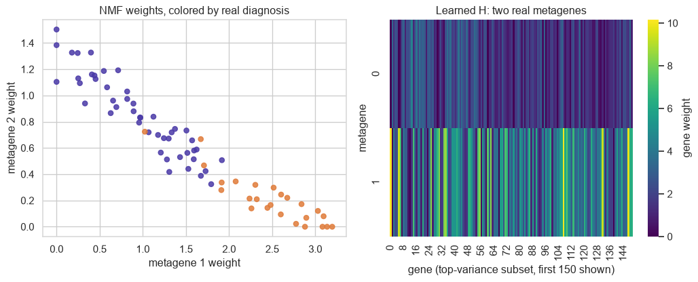

Matrix Factorizations as Optimization Problems: QR, SVD, Eigendecomposition, NMF, and Cholesky
Linear Algebra
Machine Learning
Numerical Methods
Author
Ravi Kalia
Published
August 12, 2026
Matrix Factorizations as Optimization Problems: QR, SVD, Eigendecomposition, NMF, and Cholesky
Linear algebra courses hand you matrix factorizations as a list. Here is QR, here is the SVD, here is Cholesky — each with its own algorithm, its own proof, and no answer to the question a user actually has, which is: given this matrix and this job, which one do I reach for? The list is memorable. The choice is not.
All of them do the same kind of thing. Take a matrix and write it as a product of simpler matrices, where simpler means triangular, or orthogonal, or diagonal, or all-nonnegative — simple enough that whatever you wanted to compute becomes cheap, or numerically safe, or readable by a human. That product is the factorization. What the list format hides is that each one is also the solution to an optimization problem: minimize some error, subject to some constraint. Write the constraint down and the choice stops being arbitrary.
QR is least squares refusing to square its condition number. Truncated SVD is the provably best answer to “compress this matrix.” Eigendecomposition falls out of maximizing variance along one direction instead of building two orthogonal bases. NMF is SVD’s optimum with a sign constraint bolted on. Cholesky is a positive-definite solve that stops re-deriving the inverse every time. Picking a factorization is picking which constraint buys stability, compression, or interpretability.
The rest of this post earns those five claims twice over: first on matrices built to isolate the effect, then on three real datasets — cloud telemetry, a wheat breeding panel, and leukemia biopsies — where choosing wrong has a price. One setup cell serves the lot.
Code
import ioimport timeimport matplotlib.pyplot as pltimport matplotlib.ticker as mtickerimport numpy as npimport pandas as pdimport pyreadrimport requestsimport seaborn as snsfrom numpy.linalg import cond, eigh, svdfrom scipy.linalg import cho_factor, cho_solve, cholesky, qr, solve, solve_triangularfrom sklearn.decomposition import NMFsns.set_theme(style="whitegrid", rc={"axes.edgecolor": "0.85"})ACCENT ="#4A3AA7"GREY ="#999999"rng = np.random.default_rng(7)
Squaring the condition number is the hidden cost of the normal equations
Fitting a line, or a plane, or a hyperplane through a cloud of points is the oldest job in the book. Ordinary least squares picks the coefficients that make the total squared miss as small as possible,
\[\min_\beta \|y-X\beta\|_2^2,\]
and calculus hands back a closed form for it, the normal equations:
\[\hat\beta=(X^TX)^{-1}X^Ty.\]
That formula is correct, and computing it literally is a bad idea. The reason is conditioning. A matrix’s condition number \(\kappa\) measures how much it magnifies error: perturb the input in its last decimal place and the answer moves in a place \(\log_{10}\kappa\) digits earlier. Forming \(X^TX\) squares that magnifier, because \(X^TX\)’s eigenvalues are \(X\)’s squared singular values, so
\[\kappa(X^TX)=\kappa(X)^2\]
— the whole proof, from the definition of \(A^TA\)’s eigenvalues. An ill-conditioned solve then amplifies floating-point error roughly as \(\kappa(X)^2\varepsilon\) instead of \(\kappa(X)\varepsilon\), where \(\varepsilon\) is machine precision, the gap between \(1\) and the next number a float64 can represent. Squaring the condition number spends half your significant digits before you have looked at the data.
The fix is to never form \(X^TX\) at all. Any matrix with independent columns splits into a part that distorts nothing and a part that carries all the distortion: an orthonormal\(Q\), whose columns are unit-length and mutually perpendicular, so it rotates without stretching and has \(\kappa(Q)=1\); and an upper-triangular \(R\) holding everything else. That split is the QR factorization. Substitute \(X=QR\):
\[R^TQ^TQR\beta=R^TQ^Ty.\]
\(Q^TQ=I\) gives
\[R^TR\beta=R^TQ^Ty,\]
and since \(R^T\) is invertible, both sides cancel it, leaving
\[R\beta=Q^Ty.\]
Back-substitution solves this in \(O(n^2)\), conditioned on \(\kappa(X)\) — never \(\kappa(X)^2\) — because \(X^TX\) is never formed.
Seeing the difference needs a matrix whose condition number you already know, so the demo below builds one instead of borrowing one. It draws two random orthonormal bases, imposes singular values decaying geometrically from \(1\) down to \(10^{-6}\), and multiplies them back together, which pins \(\kappa(X)\) at exactly \(10^6\). Real design matrices get ill-conditioned the same way — two sensors reporting nearly the same thing, two genetic markers inherited together — but their conditioning is whatever the data happened to hand you, which is no good for a controlled comparison. The response \(y\) is generated noiselessly from a known \(\beta\), so every digit of error below is floating point and nothing else.
Code
# Build X with a controlled condition number instead of a raw high-degree# Vandermonde basis, whose columns are so nearly dependent that beta itself# becomes ill-posed, not just numerically delicate -- singular values decaying# geometrically isolate the conditioning effect the derivation is about.n, p =200, 12U0, _ = np.linalg.qr(rng.normal(size=(n, p)))V0, _ = np.linalg.qr(rng.normal(size=(p, p)))singvals = np.logspace(0, -6, p) # cond(X) ~ 1e6, cond(X.T @ X) ~ 1e12X = (U0 * singvals) @ V0.Tbeta_true = rng.normal(size=p)y = X @ beta_true # noiseless: recovery error below is pure floating-point conditioningprint(f"cond(X) = {cond(X):.3e}")print(f"cond(X.T@X) = {cond(X.T @ X):.3e}")beta_normal = solve(X.T @ X, X.T @ y)Q, R = qr(X, mode="economic")beta_qr = solve_triangular(R, Q.T @ y)print(f"||beta_normal - beta_true|| = {np.linalg.norm(beta_normal - beta_true):.2e}")print(f"||beta_qr - beta_true|| = {np.linalg.norm(beta_qr - beta_true):.2e}")
Both solves see identical data. The normal equations recover \(\beta\) to about five decimal places; QR gets eleven — close to seven orders of magnitude of accuracy, bought by declining to square anything.
Truncating the SVD is the only rank-k approximation optimization can’t beat
Stability was the first thing a constraint could buy. Compression is the second, and there the guarantee is stronger than “works well in practice.”
Start with the shape of the problem. You have a matrix and you want a smaller stand-in for it — one that stores \(k\) patterns instead of the full grid, because storage is finite or because the patterns are the thing you were after. Rank is the count of genuinely independent patterns a matrix contains, so “smaller stand-in” formally means: among all matrices of rank at most \(k\), find the one closest to \(A\). Closest in the Frobenius norm, which is just the square root of the sum of every squared entry — the ordinary Euclidean distance, applied to a matrix flattened out.
The singular value decomposition answers that, and does not merely answer it well. It writes
\[A=U\Sigma V^T,\]
with \(U\) and \(V\) orthonormal and \(\Sigma\) diagonal, its entries the singular values \(\sigma_1\ge\sigma_2\ge\dots\) ranked by how much of \(A\) each pattern accounts for. Keep the top \(k\) and throw the rest away, and the Eckart-Young-Mirsky theorem says nothing else of that rank can do better. For any \(B\) with rank\((B)\le k\), it bounds the error:
\[\|A-B\|_F \ge \sqrt{\sum_{i>k}\sigma_i^2},\]
with equality exactly at the truncation
\[A_k=\sum_{i\le k}\sigma_i u_i v_i^T.\]
The proof runs through the Courant-Fischer min-max theorem, which pins each singular value down as the best a subspace of a given dimension can do. Any rank-\(k\)\(B\) collapses some \((n-k)\)-dimensional subspace to zero, and that alone lower-bounds its residual by the discarded singular values, no matter how cleverly \(B\) was chosen. This is a claim about every rank-\(k\) matrix, not just about rival factorizations — nothing beats truncated SVD on Frobenius error at a given rank.
Which makes the check below arithmetic rather than evidence. Truncate a random \(60\times40\) matrix at \(k=10\) and the residual should not merely be small; it should equal the tail bound to the last printed digit.
It does: both print 32.942888. The bound is attained, which is the content of the theorem.
The same variational argument that optimizes SVD also diagonalizes a symmetric matrix
That last proof leaned on a subspace argument, and the argument is more general than the theorem it just proved. Apply it to one symmetric matrix instead of two orthogonal bases and eigendecomposition falls out of it — which is worth doing explicitly, because it explains why principal components and singular values keep turning out to be the same numbers.
Here the question is not “compress this” but “which single direction does this matrix stretch the most?” Maximize the projected variance \(v^TAv\), subject to \(v\) having unit length so the answer cannot be made large by simply making \(v\) large:
\[\max_{\|v\|=1} v^TAv.\]
The standard tool for optimizing under a constraint is a Lagrangian: fold the constraint into the objective with a multiplier \(\lambda\), and an unconstrained stationary point of the combination is a constrained one of the original. Here that gives
— so the eigenvectors are precisely the stationary points of the ratio \(v^TAv/v^Tv\), known as the Rayleigh quotient, and the eigenvalues are the values it takes there. The full decomposition \(A=Q\Lambda Q^T\) falls out by repeating the maximization on whatever directions are left perpendicular to the ones already found.
That derivation has a practical edge, and it is the QR lesson wearing different clothes. A covariance matrix is \(\Sigma=X_c^TX_c\) for centered data \(X_c\), so eigendecomposing a covariance matrix is forming \(X^TX\), with the squared conditioning that implies. The eigenvalues of \(\Sigma\) are the squared singular values of \(X_c\) — same numbers — so taking the SVD of \(X_c\) directly gets you there at the original condition number. Below, both routes on the same ill-conditioned \(X\) from earlier, with the two condition numbers printed side by side.
top eigenvalues: [0.989 0.08 0.007 0.001]
top squared singular vals: [0.989 0.08 0.007 0.001]
cond(Sigma) = 9.911e+11 cond(Xc) = 9.955e+05
The two lists of numbers match to every printed digit, as the algebra says they must. The two condition numbers do not: \(9.9\times10^{11}\) for the covariance route against \(9.96\times10^{5}\) for the SVD route. Six orders of magnitude of numerical headroom, given away for an answer that was identical anyway.
Forcing nonnegativity trades optimality for interpretability
Stability and optimality are properties of the numbers. Interpretability is a property of the person reading them, and it is the one thing none of the three factorizations so far will give you.
The obstacle is signs. SVD’s optimum is free to use negative entries, so its components routinely cancel — a factor can subtract as much signal as it adds, and a “pattern” that is partly a subtraction from another pattern is a poor model of anything you would call a part. Insist instead that every entry of both factors be zero or positive and cancellation becomes impossible: each factor can only add, so the pieces are forced to behave like parts that stack into a whole. That constraint, imposed on the same objective, is nonnegative matrix factorization — NMF:
\[\min_{W,H\ge0} \|V-WH\|_F^2.\]
Lee and Seung’s multiplicative update rescales gradient descent so nonnegativity holds automatically:
\[H \leftarrow H \odot \frac{W^TV}{W^TWH}, \qquad W \leftarrow W \odot \frac{VH^T}{WHH^T},\]
and it provably decreases the objective at every step. The bill for the constraint arrives here. The problem is only biconvex — convex in \(W\) with \(H\) held fixed, convex in \(H\) with \(W\) held fixed, not convex in both at once — so the updates converge to a stationary point rather than the global one, and which one depends on where they started. The nndsvda initialization used below seeds \(W\) and \(H\) from the SVD, which makes the answer deterministic. Deterministic is not the same as optimal.
The cell below is a sanity check, not an application. It factors a \(50\times30\) matrix of gamma-distributed random draws — gamma variates are nonnegative by construction, which makes them a stand-in for the counts and intensities NMF is normally pointed at, such as word counts in documents or probe intensities on a microarray. All it establishes is that the machinery runs and the factors come back nonnegative; the real test is on leukemia biopsies, further down.
reconstruction error = 41.9530
W, H nonnegative: True, True
Factor once, solve many times: Cholesky turns O(n^3) into O(n^2) per query
NMF bought readability with a constraint on the factors. The last factorization buys speed with a constraint on the input, and it is the one case here where the constraint is a precondition rather than a preference.
The situation it answers is a solve you have to repeat. Covariance matrices in a Kalman filter, Gram matrices in a kernel method, the Hessian inside a Newton step: the same matrix \(A\) meets a fresh right-hand side every iteration, and solving from scratch costs \(O(n^3)\) every time. When \(A\) is symmetric and every eigenvalue of it is positive — equivalently \(x^TAx>0\) for every nonzero \(x\), the property called symmetric positive definite, SPD — the matrix has something close to a square root. A single lower-triangular \(L\) satisfies
\[A=LL^T\]
with positive diagonal, and it exists exactly when \(A\) is SPD, which is why the condition is not a technicality to check off. That factorization is Cholesky.
Finding \(L\) costs \(O(n^3/3)\) — half the work of general-purpose LU elimination, because symmetry means the algorithm only ever touches one triangle. Every solve after that is two triangular substitutions at \(O(n^2)\). For \(m\) right-hand sides sharing one \(A\), the total is
\[O(n^3+mn^2).\]
Forming \(A^{-1}\) explicitly and multiplying has the same asymptotic look and worse constants and worse conditioning, which is the reason for the standing advice never to invert a matrix in order to solve with it. The benchmark below is that advice made checkable: the same SPD system and the same five right-hand sides, factored once versus inverted once, across growing \(n\).
\(L\) also does a second job that has nothing to do with solving. Draw a vector \(z\) of independent standard normals and form \(x=Lz\); then
so the triangular factor of a covariance matrix is the machine that turns uncorrelated noise into noise with exactly that covariance. Cholesky is the sampling mechanism, not just the solver — a fact the wheat section puts to work.
An EC2 fleet’s telemetry is a low-rank signal plus a spike SVD isolates
Five constraints, five factorizations, every one demonstrated on a matrix built to make the demonstration clean. The rest of the post spends them on data somebody actually went out and collected — starting with the case where compression is not a convenience but the entire product.
A team running a fleet of cloud servers cannot watch every machine’s dashboard. What they want is a handful of numbers: few enough to look at, sensitive enough to catch a real incident, quiet enough not to wake the on-call engineer over noise. That is the compression-versus-vigilance tradeoff, and stated in matrix terms it is a low-rank approximation problem.
The data is the Numenta Anomaly Benchmark, or NAB, assembled by the machine-intelligence company Numenta to score anomaly detectors against real streaming metrics instead of synthetic ones — injected anomalies are easier than the real article and flatter whatever detector is being sold. Its realAWSCloudwatch category holds CPU utilization recorded by AmazonCloudwatch, Amazon’s monitoring service, from eight production EC2 instances, EC2 being Amazon’s rented virtual servers. Every anomaly timestamp in it was flagged by a person reading the trace rather than generated to order. Eight instances, not thousands, which is worth saying plainly: any claim about fleet-wide structure below rests on eight columns.
The question asked of it here is the operational one, unmodified. Stack the eight traces as columns, keep the top few components as the fleet’s shared behaviour, and treat whatever refuses to fit as the anomaly score. Both kinds of error cost something real: a missed spike is an outage nobody got paged for, and a false one wakes an engineer for nothing, which is how alerting gets muted and then stops working at all. SVD is the right instrument for this data because eight machines in one fleet are not independent — they share load, deploys, and time-of-day traffic — so the matrix genuinely is close to low-rank, and Eckart-Young-Mirsky guarantees the truncation throws away as little as any rank-\(k\) summary could.
(This section and the two after it fetch data live at render time, so a future re-render depends on those repositories staying up — though a project-wide render never re-executes this page once frozen.)
Code
base ="https://raw.githubusercontent.com/numenta/NAB/master"ec2_ids = ["53ea38", "24ae8d", "5f5533", "77c1ca", "825cc2", "ac20cd", "c6585a", "fe7f93"]labels = requests.get(f"{base}/labels/combined_labels.json", timeout=30).json()columns, anomaly_idx = {}, {}for id_ in ec2_ids: key =f"realAWSCloudwatch/ec2_cpu_utilization_{id_}.csv" df = pd.read_csv(io.StringIO(requests.get(f"{base}/data/{key}", timeout=30).text)) df["timestamp"] = pd.to_datetime(df["timestamp"]) columns[id_] = df["value"].to_numpy() label_times = pd.to_datetime(labels.get(key, [])) anomaly_idx[id_] = df.index[df["timestamp"].isin(label_times)].to_numpy()# stacked by position, not wall-clock: fleet-wide regime structure, not calendar synctelemetry = pd.DataFrame(columns)print(f"real telemetry matrix: {telemetry.shape[0]} timesteps x {telemetry.shape[1]} real EC2 instances")
real telemetry matrix: 4032 timesteps x 8 real EC2 instances
Take the SVD of that matrix and plot the singular values in descending order. What comes out is a scree plot — named after the slope of loose rubble at the foot of a cliff, because that is its shape: a steep drop, then a long flat tail. The elbow between the two is the count of components carrying genuine shared structure, and here it arrives after a handful.
Each of those components has a left singular vector attached: one value per timestep, saying how strongly that pattern was switched on at that moment. Laid out as rows, the top five read as the fleet’s regimes over the four thousand timesteps — the stretches where every machine was busy together and the stretches where none of them were.
Code
fig, ax = plt.subplots(figsize=(8, 2.8))sns.heatmap(U_tel[:, :5].T, cmap="RdBu_r", center=0, cbar_kws={"label": "loading"}, ax=ax)ax.set_xlabel("timestep")ax.set_ylabel("left singular vector")ax.set_title("Top 5 temporal regime vectors across the real fleet")plt.show()

Rebuild the matrix from the top four components and subtract it from the original. What survives is everything the fleet’s shared behaviour cannot account for, and that leftover is not merely busy-looking near the labelled anomalies — it is the anomaly score. The dashed lines below are the human-flagged timestamps, which makes the plot a check rather than an illustration.
So the top singular vectors become a few regime scores an autoscaler can react to in place of eight raw series, and the leftover energy after truncation — checked here against labels a person wrote down — is the quantity alerting pipelines page on. That is Eckart-Young-Mirsky cashed in: the guarantee is what lets you claim the discarded part is signal rather than a bad choice of basis.
Compression worked here because the eight columns were genuinely redundant. The next dataset is redundant in a different way, and severely enough to break the normal equations outright.
Linkage disequilibrium is collinearity with a biological name, and QR survives it
Redundant columns in the telemetry matrix came from machines sharing traffic. In a genome they come from inheritance. Stretches of chromosome travel down the generations as blocks, so two markers sitting close together are almost never separated, and their columns in a genotype matrix end up near-copies of each other. Geneticists call that non-independence linkage disequilibrium. A numerical analyst looking at the same matrix would call it collinear and expect exactly the trouble collinearity always causes.
Here the trouble costs a year. A wheat breeding program can genotype far more candidate lines than it can afford to plant out and measure, and advancing the wrong ones burns a growing season that no budget will speed up. Genomic selection is the practice of ranking candidates from their marker profiles alone, before a seed goes in the ground, in order not to spend that season on lines that were never going to win.
The data comes from CIMMYT — the International Maize and Wheat Improvement Center, the public research body whose wheat breeding underwrote the Green Revolution. Its Global Wheat Program genotyped 599 breeding lines at 1279 DArT markers (Diversity Arrays Technology: a hybridisation assay that reports each marker as present or absent, a 0 or a 1, rather than reading out the underlying base) and recorded grain yield for every line across four field environments. It is distributed for reuse as the wheat dataset in the BGLR R package, a genomic-prediction toolkit, which is where the cell below fetches it from.
Two features of that matrix make it the right stress test for QR. There are more markers than lines, \(p=1279\) against \(n=599\), so \(X^TX\) is singular before conditioning is even the question. And the markers are linkage-correlated with one another, so any subset large enough to predict with is also badly conditioned. This is where the squaring from the opening section stops being a demonstration and starts being a limit on how many markers you are permitted to use.
Code
resp = requests.get("https://raw.githubusercontent.com/gdlc/BGLR-R/master/data/wheat.RData", timeout=60)withopen("/tmp/wheat.RData", "wb") as f: f.write(resp.content)wheat = pyreadr.read_r("/tmp/wheat.RData")X_markers = wheat["wheat.X"].to_numpy()grain_yield = wheat["wheat.Y"].iloc[:, 0].to_numpy() # real yield, environment 1print(f"real markers: {X_markers.shape[0]} wheat lines x {X_markers.shape[1]} real DArT markers")
real markers: 599 wheat lines x 1279 real DArT markers
So the sweep below never uses all 1279 at once. It ranks markers by variance, takes the top \(p\) for a growing \(p\), fits plain least squares by QR on 450 training lines, and scores the fit by correlating predicted against observed yield on the 149 lines held out. Two things move as \(p\) climbs toward \(n\), and they are worth watching separately.
Code
marker_var = X_markers.var(axis=0)ranked_markers = np.argsort(marker_var)[::-1]n_lines = X_markers.shape[0]perm = rng.permutation(n_lines)train_idx, test_idx = perm[:450], perm[450:]y_train, y_test = grain_yield[train_idx], grain_yield[test_idx]marker_counts = [50, 150, 250, 350, 400, 430, 449]corr_qr, cond_x, cond_xtx = [], [], []for p_count in marker_counts: Xp = X_markers[:, ranked_markers[:p_count]].astype(float) Xp -= Xp.mean(axis=0) X_train, X_test = Xp[train_idx], Xp[test_idx] Q_tr, R_tr = qr(X_train, mode="economic") beta_qr = solve_triangular(R_tr, Q_tr.T @ y_train) corr_qr.append(np.corrcoef(X_test @ beta_qr, y_test)[0, 1]) cond_x.append(cond(X_train)) cond_xtx.append(cond(X_train.T @ X_train))print("markers: ", marker_counts)print("held-out corr:", [f"{c:.3f}"for c in corr_qr])print("cond(X): ", [f"{c:.2e}"for c in cond_x])print("cond(X.T@X): ", [f"{c:.2e}"for c in cond_xtx])X_sub = X_markers[:, ranked_markers[:350]].astype(float)X_sub -= X_sub.mean(axis=0)
Three panels make those numbers legible. The first is \(R\) itself for a 20-marker slice — the triangular factor QR produces, with the strictly-lower half empty by construction. The second is held-out accuracy against marker count. The third is the two condition numbers on a log scale, with a dashed line marking where float64 gives out.
Held-out correlation peaks early — 0.27 at 150 markers — then falls away, unevenly but unmistakably, to 0.05 once 449 markers are competing for 450 training lines. That is overfitting doing exactly what it does, and it is why genomic selection never runs plain least squares at genome-wide marker density.
Conditioning is the second effect, and the plot shows the squaring rather than asserting it. Both curves climb by orders of magnitude as \(p\to n\): \(\kappa(X)\) from about \(2\times10^1\) to \(2\times10^4\), and \(\kappa(X^TX)\) from \(5\times10^2\) to \(4\times10^8\) — the square of the first at every single point, as the opening derivation said it would be. Worth being honest about what that does and does not show. Neither curve reaches the dashed float64 ceiling at these sizes, so nothing here has actually run out of precision; the demonstration is of the rate, not of a failure. The consequence is still real, though, because it fixes where each method dies: the normal equations exhaust double precision once \(\kappa(X)\) reaches about \(10^8\), while QR keeps working until \(\kappa(X)\) reaches \(10^{16}\). Eight orders of headroom, surrendered for an answer that was no better.
Overfitting and conditioning point the same direction, which is why breeding programs use ridge-shrunk GBLUP — genomic best linear unbiased prediction, least squares with a penalty pulling marker effects toward zero — rather than raw least squares. Its central object is built from the same markers.
Multiply the marker matrix by its own transpose and you get \(G\propto XX^T\), the genomic relationship matrix: entry \((i,j)\) says how much of their marker profile lines \(i\) and \(j\) share, which is a measurement of relatedness rather than an assumption about a pedigree. \(G\) is a covariance matrix, so the Cholesky trick applies directly — factor it, multiply standard normal noise by \(L\), and out come breeding values correlated exactly as the relatedness says they should be. That is the sampling step GBLUP actually performs:
Code
G = (X_sub @ X_sub.T) / X_sub.shape[1]G +=1e-6* np.eye(G.shape[0]) # ridge for numerical PDL = cholesky(G, lower=True)breeding_values = L @ rng.normal(size=G.shape[0])print(f"sampled breeding values: mean={breeding_values.mean():.3f}, var={breeding_values.var():.3f}")
sampled breeding values: mean=0.000, var=0.137
\(G\) is symmetric, so the eigendecomposition derived three sections ago applies to it directly — this time as a tool rather than as a theorem. Its leading eigenvectors are the directions along which the 599 lines differ most in relatedness, and in a breeding panel that means the axes separating ancestral groups. Plot each line against the first two and lineages pull apart into clusters. Geneticists call the result population structure.
The scatter is deliberately uncoloured. The dataset’s wheat.sets field is a cross-validation fold assignment, not a population label, so there is no ancestry grouping here to colour by and inventing one would be worse than leaving it plain.
What these axes are actually for is correction. Genome-wide association studies in humans run this identical calculation under the name EIGENSTRAT and hand the top eigenvectors back to the regression as covariates, so that a systematic difference between subpopulations cannot masquerade as a marker genuinely associated with the trait. Any breeding panel mixing lineages needs the same guard, for the same reason.
Three factorizations, one dataset, each earning its constraint. The last dataset needs the constraint none of them impose.
Nonnegativity finds an ALL-only signature nobody labelled
Acute leukemia arrives in two forms that can look alike down a microscope and are not the same disease. Acute lymphoblastic leukemia, ALL, begins in the lymphoid cell line; acute myeloid leukemia, AML, in the myeloid one. They take materially different drug regimens, so calling the wrong one costs a patient the right protocol at the moment treatment matters most — and a blood smear alone does not always settle which is which.
Measuring how strongly every gene is switched on in a sample was the first thing that could settle it molecularly. Golub et al. profiled bone-marrow samples from 72 leukemia patients on Affymetrix microarrays in 1999 — a microarray being a chip carrying probes for thousands of genes at once, each probe glowing in proportion to how much of that gene’s transcript the sample contains — and founded molecular cancer classification in the process. Brunet et al. reused this same data in 2004 to introduce NMF-based tumour subtyping, which is the analysis this section repeats.
What is asked of the data here is the harder version of the question. Not “can a classifier trained on the labels predict the label”, but “does the structure fall out of the expression matrix with no label shown to the model at all” — because only the unsupervised version could ever surface a subtype nobody had named yet. NMF fits this data for two reasons. Expression intensities are nonnegative quantities, so the constraint costs nothing the data had. And the biology is additive: a tumour expresses a combination of gene programs, never one program minus another. A signed factorization would return components that cancel, fitting just as well and reading as nothing at all.
Code
gbase ="https://raw.githubusercontent.com/dharsandip/Classification_of_Cancer_by_Gene_Expression_Dataset/master"train_raw = pd.read_csv(f"{gbase}/data_set_ALL_AML_train.csv")indep_raw = pd.read_csv(f"{gbase}/data_set_ALL_AML_independent.csv")actual = pd.read_csv(f"{gbase}/actual.csv")def expression_matrix(raw): id_cols = [c for c in raw.columns ifnot c.startswith("call") and c notin ("Gene Description", "Gene Accession Number")]return raw[id_cols].to_numpy(dtype=float).T, [int(c) for c in id_cols]X_train_expr, train_patients = expression_matrix(train_raw)X_test_expr, test_patients = expression_matrix(indep_raw)expr = np.vstack([X_train_expr, X_test_expr]) # 72 real patients x 7129 real genespatient_order = train_patients + test_patientsdiagnosis = actual.set_index("patient").loc[patient_order, "cancer"].to_numpy()print(f"real expression matrix: {expr.shape[0]} patients x {expr.shape[1]} genes "f"({(diagnosis =='ALL').sum()} ALL / {(diagnosis =='AML').sum()} AML, real diagnoses)")
real expression matrix: 72 patients x 7129 genes (47 ALL / 25 AML, real diagnoses)
NMF needs \(V\ge0\), so raw intensities — which include negative background noise — get floored to a small positive value, then log-transformed and subset to the most variable genes: standard microarray preprocessing, and the step Brunet et al. also applied before fitting NMF to this exact data:
dominant metagene 0 1
real diagnosis
ALL 26 21
AML 25 0
Fit with \(k=2\) and no diagnosis ever shown to the model, the two components — metagenes, in this literature: weighted bundles of genes that rise and fall together — come out sharply asymmetric. One dominates 21 patients, and all 21 of them are ALL, with no AML at all. The other dominates the remaining 51, split almost evenly at 26 ALL against 25 AML, which is to say it carries no diagnostic signal whatsoever.
Worth stating precisely, because that is less than a clean two-way split and considerably more than nothing. NMF did not partition the cohort into ALL and AML. It isolated a pure-ALL subgroup — a little under half the ALL patients — out of an otherwise undifferentiated remainder, having been told nothing.
Code
fig, axes = plt.subplots(1, 2, figsize=(11, 4.5))colors = np.where(diagnosis =="ALL", ACCENT, "#E07B39")axes[0].scatter(W_leuk[:, 0], W_leuk[:, 1], c=colors, s=30, alpha=0.85)axes[0].set_xlabel("metagene 1 weight")axes[0].set_ylabel("metagene 2 weight")axes[0].set_title("NMF weights, colored by real diagnosis")sns.heatmap(H_leuk[:, :150], cmap="viridis", cbar_kws={"label": "gene weight"}, ax=axes[1])axes[1].set_xlabel("gene (top-variance subset, first 150 shown)")axes[1].set_ylabel("metagene")axes[1].set_title("Learned H: two real metagenes")plt.tight_layout()plt.show()

A pure signature recovered without supervision is the precedent expression-based subtyping was built on, and subtype calls of this kind now route patients to different protocols — which is where the clinical stakes named at the top of this section actually land. Nonnegativity is the whole reason \(W\) and \(H\) can be read as gene programs. Signed components would have approximated the same matrix at least as well and meant nothing, which is the trade this factorization was introduced to make: convexity given up, legibility bought.
The constraint was always the point
The list at the top of this post is still the same list — QR, SVD, eigendecomposition, NMF, Cholesky. What it no longer is, is arbitrary, because every entry now carries the thing it refuses to do. QR refuses to form \(X^TX\), and buys back the digits that squaring the condition number would have spent. Truncated SVD refuses an exact fit, and buys a bound no matrix of the same rank can beat. Eigendecomposition refuses the second basis, and buys the identity that makes covariance eigenvalues and squared singular values the same numbers. NMF refuses negative entries, and buys a factor a biologist can read, at the price of never knowing whether it found the global optimum. Cholesky refuses to invert, and buys every solve after the first at \(O(n^2)\).
So the choice is not a matter of taste, and it is not settled by the matrix alone. It is settled by what you need the answer to mean — stable, smallest, additive, reusable — and the eight EC2 traces, 599 wheat lines, and 72 leukemia biopsies above are three places where meaning the wrong thing has a price attached: a missed outage, a wasted season, a patient on the wrong protocol. Pick the constraint first. The factorization follows from it.